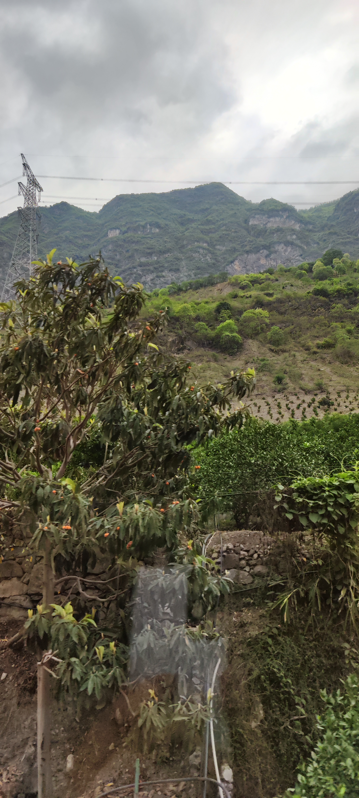

学校通知：本周末雷波有一场教师面试工作，计划20日（周六）统一乘车前往雷波，21日（周天）开展面试工作。
z.j学校又组织骨干老师去雷波参加教师引进面试工作，想到交通不便，路途劳顿，又占用周末休息时间，本来想着劝退z.j的。但没少有出差机会的z.j，想到有吃有喝，还有补贴，还是很高兴的去了。
具体行程安排：
@所有人 5月20日统一乘车到雷波（乘车地点：宜宾市文化宫（人民路小学A区斜对面）；出发时间：5月20日下午14:30，请提前20-30分钟达到），5月21日开展面试工作，21日面试结束后统一乘车返回宜宾。因面试工作需要，上车后将收取所有人员手机统一保管，面试结束后领取，参加面试的老师提前与家人说清楚，避免家人担心。所有人员要带上身份证件，换洗衣服、洗漱用品等根据个人情况自行决定。
面试工作和上次一样，没啥特别的，本次时间上宽裕一些，工作之余大家还在县城里购物，发现这个小县城的本地商品特别便宜，当季新鲜枇杷才１块钱一斤，这个也太便宜了，在宜宾市最便宜也要５块一斤呀。z.j买了10斤枇杷，如果不是担心携带不方便，还想买很多当地特产的，外表一般的枇杷被y.j.x婆婆称为吃过的最好吃水果。
当今的中国，一个地方的物价水平基本能反映当地的经济发展水平，物价飞涨的时代，还有这样低的物价，经济水平应该很差了，这让人好奇雷波的情况。
首先通过地图看了看雷波的地理位置，确实位置太差了，各交通要道都避开了它，周围都是一些经济不够发达的地区，土地资源贫瘠，缺乏矿产资源，没有支柱工业企业，也没有旅游资源。
依据百度百科的数据,2021年雷波县人均GDP为31765元，宜宾市(包括三区七县)同期人均GDP为68362元，宜宾最贫穷的屏山县同期人均GDP为41679元,宜宾最富裕的翠屏区同期人均GDP为128896元,这个是雷波的4倍左右了，难怪z.j感觉雷波啥啥都便宜，幸福感爆棚。
雷波县位于金沙江上游，一路上的风景还不错。
雷波县城整体远景：
当地特产雷波脐橙：
雷波枇杷：

沿途金沙江风光：
溪洛渡水电站，基础建设，拉动经济发展的产物。